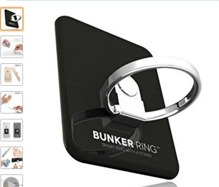
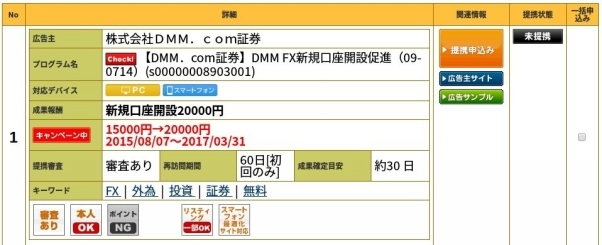
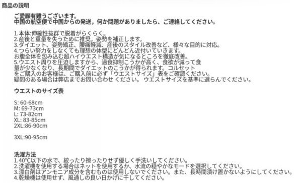
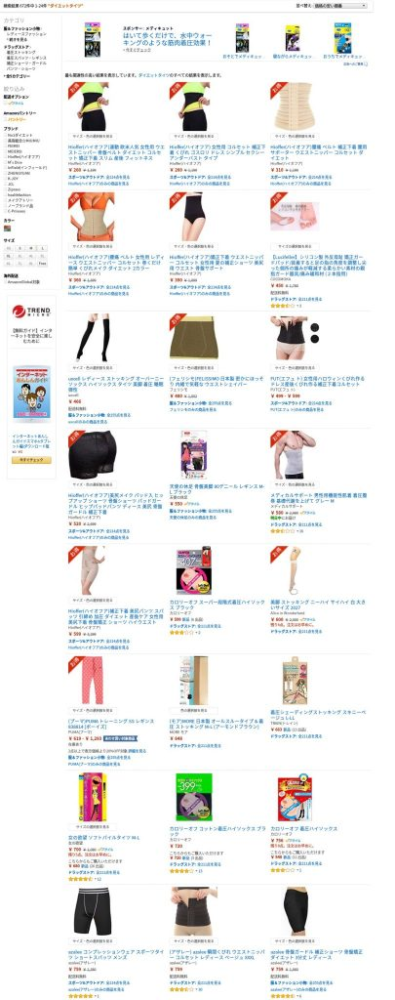
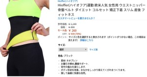
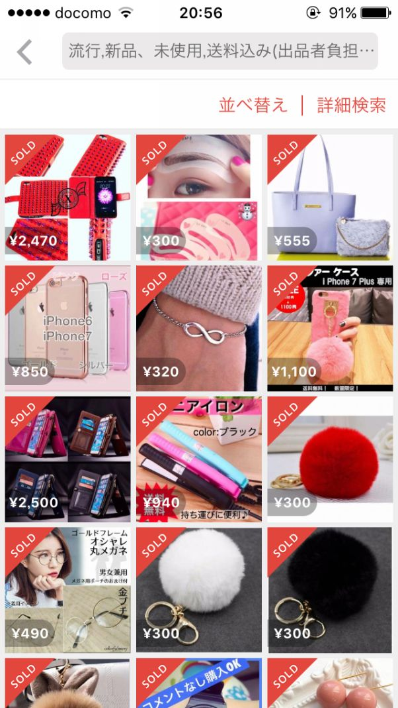

| 【Endless Challenge】 大人になっても夢は叶う『小ヤジの個力未来開拓』２０１７年2月刊増刊号: 『小ヤジの個力未来開拓では物販、情報発信、アフィリエイト、投資などインターネットを利用して『個の力』で稼ぐ為の有益な情報を発信しております。 | |
| 小ヤジ | |
| KOYAJI (2017) | |
『小ヤジの個力未来開拓』２０１７年３月刊増刊号
【Endless Challenge】
大人になっても夢は叶う
「個で稼ぐ力を身につけて自分の未来を切り開け」というテーマを元に日刊メールマガジンを配信していますが、こちらはその月刊増刊号になります。
『小ヤジの個力未来開拓では物販、情報発信、アフィリエイト、投資などインターネットを利用して『個の力』で稼ぐ為の有益な情報を発信しております。
★好きな言葉
「年輪成長」
選択した道を正解にする事を心がける。
それを正解にするかどうかは
自分自身でしかない。
自分の努力で正解にする。
自分を信じて行動する。
★理念
己の才覚・技能・経験・知識などの
「自分の武器」を世の中に役立せ、
提供し、己成長させる」
サッカー人としてこの上ない喜びを感じています。
先日横浜FCの三浦知良選手が５０歳の誕生日の日にスタメン出場しました。
誕生日の日にスタメンって・・・。
スターはやっぱりもっていますね。
現役でプレイしているだけでもすごいのにスタメンってマジでヤバすぎて想像ができない。
毎年上手くて若い選手が入団してくる中で、チームに残留するだけでもすごい事なのにね。
カズさんは５０歳になっても本気で
「今よりサッカーが上手くなりたい」と本気で思っている。
だから今だに成長し続けている。
現状維持は退化。
チャレンジし続けなければ進化はないって事を改めて感じました。
探究心もすごいよね！
年下からでもどんどんいいところを吸収しようとしている。
中古年のサラリーマンが部下から聞くって作業ができますか！？
おそらくプライドが邪魔してできないと思う。
でもカズさんにそんな事は全く関係ないんだよね。
だって
「サッカーが上手くなりたい気持ち」
のが完全に上回っているから。
学ぶべきところがマジでマジでたくさんありますよね。
そう考えるとプライドなんて持っている時点で自分の成長はないなって思ったりしています。
プライドなんてクソだ！
捨ててしまえ！
プライドを捨てた者は怖いもの知らずですからね。
強いですよ〜！
３０代後半の時は「カズの時代は終わった」とマスコミから叩かれまくった。
でもカズさんはプレイし続けた。
これってやっぱり相当強い「芯」がないと普通はブレると思う。
そんなバッシングもここまで（５０歳現役）来ると一切聞こえてこない。
むしろバッシングしていたマスコミさえも今では味方につけている。
世界各国でもニュースになっているようだ。
やっぱりすごいの一言だよね。
マジでかっこええわ！
今度試合を生で観戦してきますわ。
学生の頃にヴェルティと練習試合した時にカズさんと対戦した事があったんだけど、自分の憧れている人が目の前にいて完全に頭が真っ白になったのを覚えている。
カズさんと一緒にサッカーができたのは僕にとって今でも最高の思い出です。
生きる伝説ですな〜。
これからも応援します！
PS
試合後のセレモニーでピンクのスーツで登場していましたね。
普通の５０歳には絶対に着こなせないよねW
着る勇気がまずないW
でも、全く違和感がなかった。
さすがですね。
僕もかっこよく歳とりたいな〜。
気付いたらAmazonサービスを結構利用している事に気づきました。
ありゃま！
・プライムビデオ
・キンドル
・プライムミュージック
やっぱり便利だわ、Amazon！
ちなみにキンドルのサービスで「Kindle Unlimited」っていうのがあるのを最近知りました。
どんだけ情弱なんだっていうツッコミはなしでお願いしますW
これ、どんなサービスかというと月額９８０円でKindleで本がダウンロードし放題なんです！
全てではないんですがかなりの量です！
マジヤバっ！
今までほとんど本を読まずに生きてきたので、最近ちょっと読書にハマっています。
Amazonの各サービスをiPhoneに入れておけば、長時間の移動も全く苦ではないですね。
どっちかというと時間が足りない位です。
３時間なんてマジであっという間ですわ。
飛行機や新幹線の移動中やご飯を食べながらKindle、プライムビデオを楽しめる便利なアイテムを先日購入したんですがマジで使えます。
それがこれ！

原価知っているだけに１９００円とはちょっと高い気がしますが、そこはしょうがないよね〜。
僕は基本横にして利用しています。
個人的にはiPhoneホームボタンを右にしてやや上に設置するといい感じです。
理由は画面がちょうど見やすい角度になるからです。
最近はタブレット、パソコンなしでほぼ全てiPhoneで完結できるようになりました。
「iPhone」×「Google Apps」の組み合わせは個人的にはすごく快適です。
ちなみにGoogle Appsを使いこなす人ってあまり会った事ないけどマジで便利ですよ！
今回紹介したアイテムと折りたたみキーボードがあれば問題なくどこでも仕事ができます。
おかげで出先の荷物がだい軽量化されました！
これからの時代、パソコンを持ち歩いてカフェで仕事するっていうのはもう古いって言わるれる時代はくるのかも！？
いや、もうそこまで来ている・・・。
最近移動が楽しいわ〜！！
最近旅用に新しいリュックサックを購入しました。
基本国内も海外もリュック１つでいきます。
預ける時の時間、到着してから荷物を回収する時間がもったいないし、面倒だからです。
必要なモノがあれば旅先で購入すればいい。
こんな感じで旅をしています。
最近思う事。
それはやはりデザインより機能が大事だな〜って思ったりしています。
服もお洒落はせずにかなりスポイーティーな感じにしています。
動きやすいし、楽。
そこに多少「お洒落」というデザインををスパイスする。
「お洒落」を捨て「機能」を選択。
家のいらないモノを７０％程処分しました。
本当に必要なモノって実はそんなにない事に気づいた。
自分の身の回りのモノ、身につけるモノを「コンパクト」に「シンプル」にアップデート中です。
何か不思議なんですがこの作業が妙に楽しいW
なんでだろう！？
さて、今日はあなたが商品の仕入れ先を今後増やしていく際にやるべきことについてちょっとお話してみたいと思います。
企業と取引して仕入れる際、確認する事は多々ありますが、まずは商業登記簿謄本を確認するといいでしょう。
そんな事をしてどうするのかと言うと、その企業の信用度を調べます。
商品を卸す場合も卸先企業の信用度を調べておく事をおすすめします。
仕入れ先から偽物の商品をつかませたり、卸先から代金が回収できないなどのトラブルを事前に回避するのに役立ちます。
商業登記簿謄本の中でも履歴事項全部証明書を取得します。
役員欄や目的欄を確認することで、企業の信用を確認することができます。
特に確認しないといけないのは役員欄と目的欄ですね。
頻繁に役員がそっくり交代していたり、事業目的が多すぎたり、住所が頻繁に転々としている場合はかなり要注意です。
資本金の額は実はあまり気にする必要はありません。
こういった情報も知っておくと「自分の身は自分で守る」って事につながっていくと思います。
ちなみにAmazon販売ですごいな〜って思うところは、「売上金の未収」がない事です。
これって気付いている人はあまりいないと思うけど、マジですごい事です。
入金チェックはしなくていいし、督促もしなくていい。
売れたら勝手にお金が入ってくる。
マジで感謝です。
このありがたみ、わかる人にはわかると思う。
PS
こないだ、ネットでお金についての記事を目にしました。
お金とは何か！？
↓
「お金＝信用度を数値化したもの」とありました。
「なるほど」と思いましたね。
信用なくしてお金は稼げないですよね。
うん、深い深い！
前回の記事 「自己アフィリエイトを舐めんなよ！」 では自己アフィリに多くの人が行動してくれました。
だよね、だよね〜。
資金ゼロ、ノーリスク、利益率１００％で２０万以上稼げるんだからやらない理由がみつからない。
まだ行動に移していない方はこの機会に是非。
これも知っているかいないかの差だけです。
あとはあなたが行動するかどうかだけです。
人は体感してはじめて信じる。
リスクないんだからまずは１つやってみようよ！
最近は暖かい日だったり、寒い日だったり、風が強い日だったり、ラジバンダリ−（古っ！）
わかる人はかなり少ないネタ・・・。
されにしてもマジで体がおかしくなりそうですね。
あなたも体調管理には気をつけてくださいね。
都内では建設ラッシュが続いています。
今後日本は人口が激減していきます。
すでに需要と供給のバランスが崩れはじめているのに、すごい違和感W
「これから東京オリンピックがあるから、不動産投資は儲かりますよ〜」っていう不動産営業。
これは情弱者だとつい乗ってしまうよね。
過去にオリンピックが開催されて国の為替、不動産をリサーチすれば今が買いなのかどうかはわかります。
物販のリサーチができるようになると、こういった事もリサーチできるようになります。
思考、視点の問題です。
物販でも何が売れたのか過去のデータ分析が重要です。
不動産、金融もこういった思考で見ていくといいです。
歴史は繰り返される。
不動産が暴落した時に買いを仕掛ける人が大きな富を得ます。
話は変わりますが今後大阪がアツくなりそうですね。
マカオなどでカジノを運営するメルコ・クラウン・エンターテインメントが大阪で構想している複合型リゾート施設の完成イメージ図を初公開しました。
日本でのカジノ運営解禁をにらみんでの投資です。
その投資額はなんと１兆円以上らしい。
ありがたいですね！
カジノってやった事ないけどおもろいのかな！？
ワクワク、ドキドキするのかな！？
人生に１度位はやってみるか！！
おお〜、これ欲しい〜！
海沿いに住んで自宅から波乗りポイントまでにこれで行ったら最高だろうな〜！！
ミニカー登録で公道を走れるらしいのだ。
株式会社ブレイズが販売しているnext cruiserっていう車なんですが何と３９万８千円！！
今年の夏は鎌倉七里ケ浜をこれで走りたい〜！！
僕には理解ができない。
ノーリスクで利益率１００％の自己アフィリエイト！
教えても言ってもやらない人が多数・・・。
マジで意味がわからない。
どんなビジネスでも現金が多ければ多いほどいいスタートがきれる。
動かすお金も大きくなる。
すなわち稼ぐスピードが上がる、上がる！
なのに何故やらぬ！？
自己アフィリだけで２０万円なんて簡単に稼げる。
だって、やれば稼げるんだもん。
こんな簡単な事ができない人がネットビジネスで稼げますか！？
えっ！？
面倒い！？
これが面倒いと言うならば、あなたは何をやっても成功する可能性は低いでしょう。
例えばDMM証券。
これを自己アフィリすれば２万円がノーリスクでゲットできます。

証券口座、クレジットカード系は報酬が高いのでこれだけに集中して自己アフィリしただけで２０万以上は無料でノーリスクでゲットできます。
だからなんでやらないの！？
やろうよ、自己アフィリ！
スタートは肝心だよ！！
最近僕の読者さんから僕がラーメン好きとあってなのか各地のラーメン情報が集まってきます。
あざす！
ラーメン屋巡りも旅の楽しみだったりします。
来週あたりは北海道か鹿児島でも行ってみようかしら〜。
そういえば今日ややウケの出来事がありました。
成田空港に行く前に成田駅でおりて成田山新勝寺によったんです。
で、駅前に立ち食いそば屋があったんですよ。
思わず引き寄せられてよってみたんです。
で、券売機で「海老天うどん/そば」の食券を購入して窓口で「うどんお願いします」って言っておばちゃん（おばあちゃん！？）に食券を渡したんです。
そしたらそのおばちゃんが「はい、了解しました〜、蕎麦ね〜」って・・・。
おいおい、マジか！？
これはボケなのか！？
ほんの０．５秒前に目の前で俺はおばちゃんに「うどん」って言ったよな〜。
あと数年後には４人に１人が高齢者となる。
こんな事が日常茶飯事に起こるんだろうな〜っと冷静に考えてしまったW
こりゃいろいろ大変になりそうだわ。
こりゃマジで笑えんわ。
東芝社員の年収が２００万円減らしい・・・。
これがマジだったら死活問題だ。
「大企業に就職したから安心だ〜」なんて時代はとっくに終わったな。
「大企業の下請けだから安泰だ〜」なんていう町工場はすでに皆無だろう。
あなたがもし年収２００万も減ったらどうします！？
これ、マジで考えてた方がいいですよ。
他人事では済まされない事態、時代です。
倒産、減収、解雇のリスクはあなたにもあるって事は心に刻んでおいた方がいいです。
「倒産、減収、解雇」のリスクをリスクヘッジする為にも収入源を増やしておく事はマジで重要だと思う。
「老後破産」なんて言葉がうまれた今日、１０年、２０年後の日本はもっと悲惨な状況になっていると思う。
これからの時代、「個で稼ぐスキル」の重要性は益々上がるでしょう。
「個で稼がなければいけない」っていう人が増えるって事です。
「有益な情報を知っているか知っていないか」の差ってマジで大きいと思う。
だから情報には価値がある。
日本人は無形なモノに拒否反応をしめす人が多い。
情報も無形なモノ。
だから怪しい・・・みたいな。
でもたった１つの情報で生活がかわる事もある。
あとはその情報を得た後に「実行」「継続」できるかどうかが大きな分かれ目なのかと個人的には思っています。
あなたも真剣に自分の未来を、家族の未来を考えてみるタイミングかもしれません。
今日は家族でディズニーランドに行こうと思っていたんですが、天気予報を見たら午後から雨だったので急遽行き先を変更。
千葉県の木更津アウトレットパークに行ってきました。
行く前にググったら、アウトレットの中では木更津が御殿場を抑えて人気がNO１！
店舗数も御殿場とほぼ変わらない規模！
お〜、知らんかった。
木更津アウトレットってそんなに大きかったのねW
御殿場にしかないと思っていたGUCCIの店舗もあったわ。
でも、期間限定らしい・・・。
僕は旅先はかなりラフで動きやすい格好が好みなので、アディダスで大人買いしてきました。
旅先で会う人によく言われるのが
「随分とラフな格好ですね・・・。」
うん、だって楽なんだもん。
それにしても今日は風がめちゃくちゃ強かった！
マジでズラが飛ぶかと思ったW
（ちなみに僕はズラではありません）
車を運転していても、風でハンドルをもっていかれてマジで怖かったわ。
木更津のアウトレットがあれだけの規模ならもう御殿場のアウトレットも行く必要はないな。
ちなみにアウトレット商品ってアウトレット用の商品をつくって販売しているのって知っていますか？
もちろん全てではありません。
僕が昔勤めていたアパレル商社でもアウトレット用の商品品番がありました。
割れ煎販売と戦略は一緒ってことですな。
さて本題。
物販でかなり質問の多いのが「リサーチ」についてだったりします。
大量無在庫販売の場合は特にリサーチは必要ありません。
（だから無在庫オンリーセラーはリサーチ力がマジでない！）
でも有在庫販売の場合はやはりしっかりとしたリサーチが必要です。
在庫を持って販売するってことは在庫リスクがありますからね。
でも、このリサーチでつまずくセラー、脱落してしまう人がマジで多いのも事実です。
最初コツを掴むまでは時間もかなりかかりますからね。
僕も最初は儲かる商品を見つけるのに慣れるまではかなり時間がかかりました。
でも、このリサーチ、できるようになるとかなり楽しいです。
最初はマジでクソつまらない作業でしたけどね。
物販のリサーチができるようになると、他業界でのリサーチにも応用が効きます。
これはかなりの武器になります。
とは言っても苦手っていう人は絶対にいますよね。
その気持ち、めちゃわかります。
一番簡単な方法は何だと思います！？
それはリサーチの視点を変えるってことです。
リサーチの視点をかえる！？
通常は人気ある商品で価格差ある商品をリサーチしていくと思います。
そうではなくて、セラーが取り扱っている商品をリサーチしていきます。
どのセラーでもいいってワケではありません。
FBAセラーのFBA商品をリサーチします。
これはAmazon国内転売、Amazonっ輸出、Amazon輸入でもいけます。
それはナゼだと思います！？
答えは
「既にリサーチが完了している商品」だからです。
FBA販売って事は有在庫販売です。
つまり在庫を持って販売しています。
在庫を持って販売するって事は当然需要がある商品を仕入れて販売します。
売れない商品を在庫を持って販売するって事はかなりリスクがあります。
基本そんなセラーはいません。
って事はFBA商品は既にリサーチ済みの商品の可能性が高いって事です。
あとはFBAセラーの取扱商品を見ていくだけです。
ここで確認しておくべき事をいくつか上げておきますね。
・その商品が月にどれだけ売れているか！？（需要）
・ライバルFBAセラーがどれだけいるのか！？（供給）
・利益がだせそうかどうか！？
考え方、視点をちょっと変えるだけでいろいろなリサーチ方法がありますね是非試してみてくださいね。
Amazonセラー、ebayセラーと会うと出てくるあるある話があります。
何だかわかります！？
それはですね・・・。
「●●さんのアカウントがとまってみたいですね」
・・・・・・・・・・・・。
これ、マジでうよく聞く話です。
はっきり言っていいですか！？
「マジでどうでもいい！」
トップセラーの取り扱う商品を研究するのはリサーチとしていいことだと思います。
でも、どのアカウントが誰のアカウントなのかなんてマジでどうでもよくないですか！？
どのアカウントが誰なのか調べている暇あったら、僕は他に稼ぐ事に時間をさきますわ。
こういった話をする時点でそのセラーのレベルがわかります。
トップセラーの会話の中でこんなくだらない話なんてでません。
だってどうでもいい事ですもん。
そもそもトップセラーなんてたった１個のアカウントで運営している人なんてほぼいませんよ。
当然リスクヘッジをしている訳です。
人の不幸をうれしそうに話している暇があったら、もっと稼ぐ事に時間と頭を使いましょうよ。
僕だって、一案最初のアカウントは死んでいます。
つまり、リサーチしても僕が運営管理しているアカウントがどうかはわかりません。
マジで人のアカウントを気にしている人が多い事に違和感というか何というか・・・。
素直な気持ちを言っていいですか！？
「マジで気持ち悪い」
もっと時間を有限なんだから有効に使いましょうね。
さて本題です。
前回の記事は見て頂けましたか！？
まだの人はこちらからどうぞ。
ここはすごく重要な部分なので必ず目を通して下さい。
前回リサーチした商品を元に出品してみましょう。
リサーチした商品が必ず売れるというワケではありません。
リサーチした事により売れる確率を上げたという解釈をしてください。
後は、リサーチして出品数を増やせば売れる確率、売れる数、売上、利益は上がっていきます。
では出品について解説していきます。
メルカリは３枚まで画像をアップできますので必ず３枚アップしましょう。
商品タイトルの頭には
「数量限定」
「大人気」
「芸能人」
とかのキーワードを入れるとユーザーの目に止まりやすいです。
クリックされてナンボなのでタイトルはかなりキーポイントだという事を意識してください。
メルカリ販売の７割は商品タイトルで決まります。
それ位重要って事です。
Amazonから画像を拝借（コピーして保存）
↓
メルカリへアップ
↓
Amazonから商品タイトルを拝借
↓
多少キーワードをプラスしてメルカリの商品タイトルを設定
↓
商品説明文をAmazonから拝借

↓
メルカリにコピペして出品
↓
送料込で出品
↓
メルカリ価格はAmazon仕入れ価格の２〜３倍で設定
メルカリ無在庫販売についての問い合わせも受け付けていますので遠慮無くご連絡くださいね。
２４時間以内に回答させて頂きます。
数日前から風邪気味で調子がなかなかあがりません。
自分の生産性をあげる為にいろいろな部分をシンプル化していますが、かなりいいですね。
インプットの時間がかなり増えました。
インプットする情報の質も上げました。
インプットする情報の質をかえる
↓
思考がかわる
↓
行動がかわる（アウトプット）
↓
習慣がわかる
↓
環境がかわる
↓
結果がかわる
世の中の９割以上が使えない情報です。
つまり世の中に出回っている本当の良い情報というのは１割もないという事です。
それをビックデータやそれ以外からどうやってフィルターをかけて収集するかが今後重要になってきます。
さて、先日YouTubeでおもしろい動画をたまたま見ました。
武井壮さんの「大人の育て方」っていう公演（番組！？）なんですが、かなり面白いです。
彼の「発想」「視点」はかなり学ぶものがありますね。
彼がナゼ売れているのか！？
彼がナゼ生き残っているのか！？
このあたりがこの動画を見て腑に落ちました。
その動画は こちら
こういうリンクを貼って紹介しても見る人、いない人はやっぱりでてくる。
こういう「小さい事の積み重ね」で人はどんどん差が広がっていく。
成功は日々の小事の積み重ねですよね！
「世の中の流れ」×「自己分析」を数値化して自分が何をすれば良いのかを導く出す。
なんかこれってあの伝説の島田紳助さんの公演 「NSC講習の戦略の重要性」 に近いものを感じました。
やっぱりこうやって物事をロジカルに分析できる人は強いな〜って最近思ったりします。
昔はなんとも思っていなかった島田紳助さんの 「NSC講習の戦略の重要性」 なんて今見るとマジで感動レベルの内容です。
「鳥の目、虫の目、魚の目 」を持ってさまざまな角度から物事を見て分析して実行に移す。
これをやり続けるものが生き残る。
現状維持は退化でしかない。
最近日本の大企業はいろいろ大変な事になっています。
昨日も東芝が・・・。
「東芝ショック」なんていう言葉まで飛び出していました。
大丈夫か、ジャパンブランド！？
世の中の変化に対応できる企業、人が最後は生き残る。
これ、間違いないですね。
天狗になっていたら一瞬で足元すくわれる時代。
さ〜、気を引き締めて行こうぜ！
「大人になっても夢は叶う！」
昔だったらこんな事言っている奴はマジで頭おかしいと思っていたけど、環境がかわって付き合う人が変わるといつのまに自分も変化している。
こんな事言っている人がいても「だよね〜」って話になる。
不思議だよね〜。
だから楽しい！
会社の愚痴、上司の愚痴、同期の愚痴、部下の愚痴言っている暇あったら稼ぐ事考えた方がよっぽど自分の為になし楽しいと思う。
これはサラリーマンの方への僕からのメッセージです。
あれっ、そう言えば会社辞めてから俺、愚痴って言った事ないな！？
ノーストレスだわW
PS
昨日の記事で餃子の王将ネタを書きましたが餃子の王将って吉野家ばりに意外と芸能人にも人気です。
やっぱりあれ、ハマるよね！
最近「メルカリ無在庫販売」のHOW TOを公開していますがかなり多くの人が関心があるようです。
何故わかるかって言うと、いつもよりメルマガ読者さんからの質問、問い合わせが多いんですよね。
と言ってもいつもが少ないんですけどねW
なんかそう考えると公開してよかったな〜って思ったりしています。
人に価値ある情報を発信し続ける。
これって情報発信者としては常に考えなければいけません。
と、僕は勝手に思っています。
まだまだ続編がありますので楽しみにしていてください。
まだ過去の記事を見ていない方はこちらからどうぞ！
↓↓↓
メルカリ無在庫販売VOL２ メルカリで売れている商品をリサーチ
今日はちょっとした情報をあなたにお届けします。
餃子の王将って知ってます！？
チェーン店で全奥展開しているから知っている人は多いハズ！
ラーメンはおいしくないけど、餃子はいい感じです。
めちゃ旨いってワケではないけど、あの価格であのクオリティならおすすめです。
「餃子」×「生ビール」はやっぱり最高っすね。
で、餃子の王将には「お客様感謝スタンプカード」っていうのが存在します。
税込み３００円で１個スタンプを押してくれるんですけど、この還元率がヤバイっす！
スタンプカード１枚で１２個のスタンプを集めるとなんと３００円引き！
つまり３６００円分食べると３００円引きです。
計算すると還元率８．３％！
高っ！
こんな高還元率のスタンプカードって今時ないんじゃないかな！？
興味あったら是非どうぞ！
なんか夢あるな〜、YouTuber！
米国のニュース専門テレビ局ＣＮＮが、ニューヨークを拠点に活動するケイシー・ネイスタット氏（YouTuber）の会社を２８億円で買収だってさ〜。
ひょえ〜！
マジですごい数字だね！
今や子供の憧れの職業ベスト１０に入ったきたYouTuber。
でも、どれだけの人がYouTuberって具体的にどうやって稼いでいるのかを答えられるのかね！？
このあたりは話すと完全に脱線するので機会がある時にお話しますが、YouTuberで稼ぎ続けるって大変だよね！
大量生産してアドセンスで稼ぐ方法は個人的には好きではない。
そんなコンテンツに僕は価値を感じない。
では本題。
以前の記事はご覧になりましたか！？
すごく重要な部分なので必ず目を通してくださいね。
記事はこちら
→ 「メルカリ無在庫販売VOL２ メルカリで売れている商品をリサーチ」
前回はメルカリでどんな商品が売れているのかを確認しました。
需要を確認する事は需要です。
売れない商品を販売しても当然売れません。
つまり、無駄な出品作業が増えてしまうって事ですね。
今回は仕入れについて解説していきます。
今回は誰でも仕入れができるレベルって事でAmazonを利用します。
えっ！？
Amazonで仕入れて利益が出るの！？
って思うかもしれませんが大丈夫ですよ！
では見ていきましょう。
メルカリでの検索キーワードは「限定」です。
リサーチ時の設定は前回の記事を確認してください。
フィルターをかけた結果の中からランダムに商品を選択します。
今回はこちらです。
この商品のキーワードは「ダイエットタイツ」です。
まずは日本Amazonを開いてください。
そして検索欄に「ダイエットタイツ」と入力して検索してください。
すると以下のように検査結果がでてきます。

次に画面右上の「並び替え」横のプルダウンから「価格の安い順」を選択してフィルターをかけてください。
これで安い順番に商品が並び替える事ができました。
多くの人がメルカリで売れた商品と同じ商品を探して出品しようとします。
でもなかなかターゲット商品が見つからず次の商品をリサーチ。
こんな感じでリサーチを繰り返していき、途中で面倒くさくなって辞めてしまう人が続出します。
ではちょっと思考をかえてみてください。
その商品に「需要」があるかどうかってが重要だって事を僕は言いましたよね！？
って事は「別に同じ商品を販売する必要はない」って事です。
ダイエットタイツに需要があるって事は、それに関連した商品も売れる可能性があるって事です。
わかります！？
今回で言えば以下のような商品もメルカリで売れる可能性が高いって事です。

しかも２６０円W
ロット数を考えればたった１個でこの値段なので中国仕入れとあまり変わらない価格で仕入れる事が可能です、
安いでしょW
他にも関連商品がたくさんありますのでそういった商品をメルカリで出品していきます。
しかも無在庫で！
次回は出品について解説していきますね。
先日は吉祥寺の kont に遊びにいってきました。
knotって知ってます？
メイドインジャパンの時計にトコトンこだわるベンチャー企業が立ち上げたメーカーです。
メイドインジャパンと言われているメーカーの時計の部品の多くは海外で製造されています。
最後日本で組み立てればそれでメイドインジャパンになりますからね。
でもknotは違う、
全ての部品がメイドんジャパン、もちろん組み立ても日本！
これぞまさしくメイドインジャパンだぜ！
こういうこだわりのあるメーカーって「かっこいい」ですよね。
「安心の完全メイドインジャパン」×「シンプルデザイン」×「リーズナブルな価格設定」
そりゃ、人気でるわな！
海外展開が楽しみだ。
こうなると値段が気になるところですが、デザインは極限までシンプルにする事や工場から直納する事で大幅なコストを削減してリーズナブルな価格設定をしています。
高くても５万位！
お店の雰囲気を見るだけのつもりで行ったのですが、knotのこだわりに魅了されて思わず１本購入してしまいました。
僕はアクティブな人間なので基本時計はGショックです。
旅先でも波乗りでもつけっぱなしなのでGショックってマジで楽なんですよね。
壊れないしW
Gショック以外の時計を購入したのはかなり久々です。
ちなみに高級時計には全く興味がありません。
興味ある方は吉祥寺以外にも心斎橋、横浜元町に店舗があるので是非行ってみてください。
今年に入ってテレビを見ていないって話は以前にしました。
全く見ていません。
おかがでさまでインプットの時間をが大幅に増えました。
おかげで毎日クタクタです。
頭を使って作業をするってマジで疲れますわ。
新たな自分探しの為にとりあえずテレビを見ることを捨てた小ヤジですが、最近は財布を持ち歩く事を辞めました。
ではどうしているのか！？
クレジットカード１枚と免許証だけをカードケースに入れて外出しています。
おかげでポケットの中がかなりスリム化できました。
念の為に１万円を現金でカードケースに忍ばせていますがほとんど使う日はありません。
なんでこんな事をするのか！？
財布がかさばって邪魔だったのと、小銭を出したり入れたりするのが面倒だったからです。
そして最近はノートパソコンを持ち歩くのも辞めました。
すべてiPhoneで解決できるような環境を整えました。
メルマガ、外注tとのやりとり含めすべてiPhoneオンリーです。
メルマガ書く時はポケットに入る折りたたみキーボードを利用しています。
これで荷物がかなりコンパクトになり、外出にリュックを背負う事もなくりました。
やればできるものですね。
持ち物をコンパクトにする事で行動も更にしやすくなりました。
さて、次は何を削ぎ落とそうかな！？
俺の脂肪！？
ほっとけ！
iPhone７だけで毎月４０ギガ近く使う強者の妻にiPad mini４をプレゼントしたらめちゃ喜んでくれました。
スマホだけで４０ギガも利用したら目がおかしくなるだろうって事での僕なりの配慮です。
プレゼントといってもドコモで無料で手にいれました。
基本料金をいれても無料です。
というより２００円プラスです。
知っているか知らないかの差はでかいな〜って改めて思いますね。
これで妻のネット利用頻度は更に高まるでしょうW
めでたし、めでたし・・・。
さて、毎月更新している自己アフィリのリストですが今月分（２月）を更新しました。
今月分も５０万程のリストです。
リスクなしで稼やれば必ず稼げる手法なので是非実践してください。
やらない意味がわからない。
僕もいまだに毎月やります。
だって、ノーリスクで数万円〜数十万円がゲットできるんですもん。
さて本題。
実は昨日大変な事が発生しました！
何かというと僕のブログサイトが飛びました。
WordPressのプラグインを全部で４０個程更新している最中に事件が発生。
W3 Total Cacheっていうプラグインを知っていますか！？
簡単に言うと、サイトの表示速度を大きく改善することができるプラグインです。
このプラグイン、どうも他のプラグインとの相性が悪い。
以前もこのプラグインを更新した際に不具合が発生しました。
プラグインを更新する際はバックアップをとってからやった方がいいですよ。
そして、まとめていくつものプラグインを更新するのはやめた方がいいです。
どのプラグインが原因でエラーが発生したか分からなくなります。
なので、ちょっと面倒ですが１個１個更新する事をおすすめします。
そうする事で、どのプラグインが原因でエラーが発生したのかがわかるので早く対応ができます。
以前僕はまとめてプラグインを更新していました。
おかげでエラーが発生した際に原因のプラグインを特定するだけでエライ時間がとられました。
プラグインを更新してエラーが発生した場合の対応をせっかくなので簡単にご紹介します。
ちなみに今回のケースはWordPress自体にログインができなくなるという厄介な状況になりました。
WordPressの管理画面にログインできるのであれば、プラグインを削除するか停止してしまえば大半は復旧します。
ちなみに今回の解決策としてはプラグインのフォルダ名をリネームしないといけないらしい。
FTPサーバーにアクセスしないといけないんだって・・・。
マジで苦手な作業っす。
ではいってみましょう。
↓↓↓
FTPソフトをダウンロード
※今回はFFFTPソフトを利用
↓
インストールしてソフトを開く
↓
次にエックスサーバーにログイン
↓
FTPアカウントを設定を開く
↓
問題が発生したドメインを選択
↓
FTPソフト設定を選択
↓
FTPサーバー、ユーザー名を確認
↓
次にFTTTPソフトを開いてエックスサーバーで確認したFTPサーバー、ユーザー名、パスワードを入力。
※ホストの設定名は自分で決めてOK
↓
最後に接続をクリック
↓
ダウンロードが開始されます
↓
ダウンロード完了後は不具合が発生したドメインを選択
↓
public_htmlを選択
↓
wp-contentを選択
↓
pluginsを選択（プラグインファイルがある場所）
↓
不具合が発生したプラグインをリネーム
これで完了です。
今回はちょっとマニアックなネタでしたけど、１人位は助かる人が出てくると思いますW
PS
今年はテレビを全く見ない生活を続けています。
ニュース関連はネットでビジネスオンデマンドの動画アプリのみ。
久々にこの生活をやりましたが、時間ができていいですね。
大好きなやべっちFCも捨てました。
何か得ようとする時は何かを捨てる。
ですね。
ここ４ヶ月位携帯の料金が高いな〜ってちょっと思っていました。
だいたい毎月６〜７万位。。。
でもネットで明細を確認するのが面倒だから放置していました。
が、昨日ちょっと時間ができたのでドコモにログインして明細を確認してみました。
そしたら原因がわかりました。
嫁さんのパケット代が８割を占めていましたW
自宅ではWi-Fiを利用しているので問題ないんですが、外出先や移動中にかなり利用していたようです。
アパレル系のネットショップとかインスタとかWEARとかって画像が多いから以意外と容量喰んですよね。
シェアパックで１０ギガ契約していたんですが、その容量を超えるとネット速度が遅くなります。
で、嫁は毎回１ギガずつオプションで購入していたみたいW
それもかなりの回数W
そりゃいくわな！！
気づかなかった僕の責任です！
で、対策を考えました。
嫁にWi-Fi持たせるのも邪魔だろうし、どうしようかな〜っとドコモのサイトを見ていたら・・・。
見つけました、対策方法を！
どうやらウルトラシェアパックで１００ギガまで対応できる契約がありやしたわ！
１００ギガで２５０００円だって！
おお〜！
全然これのがええやん！
ってことで無事に問題が解決できました。
ポケットWi-Fi持ち歩くのはダルいので、これでええわ！
スマホをポケットWi-Fi代わりにデザリングでも利用できるし！
これで毎月５万位は携帯料金が安くなるでしょう！
マジで俺情弱やわ〜。
さて本題。
メルカリで販売していく上で重要になってくるのが商品リサーチです。
リサーチは２つにわかれます。
まず１つが
「メルカリで何が売れているか！？」
もう１つが
「仕入れ」です。
今回は「メルカリで何が売れているか！？」をリサーチしてきましょう。
「メルカリで何が売れているか！？」
つまり、需要です。
重要になってくるのは以下になります。
・売れた商品（アイテム）
・売れた商品のタイトルキーワード
売れた価格については気にしなくて大丈夫です。
では見ていきましょう。
まず検索キーワードに「流行」といれてください。
最初にメルカリのユーザーは若い情勢や主婦とお伝えしましたね。
こういったユーザーがどういったキーワードで検索するかを想像する事が大事です。
他にもたくさんありますよね。
例えば
・日本未入荷
・限定
・人気
・値下げ
・在庫限り
・在庫処分
・芸能人
などなど
続いて詳細設定をします。
・商品状態→新品
・配送料→送料込
・販売状況→売り切れ
これで設定は完了です。
では検索してみてみましょう。

※検索キーワードがかわっても詳細設定は全て同じです。
これでどんなアイテムが売れているのかが確認できます。
検索キーワードを変えていろいろリサーチしてみてください。
これらの商品を今度は仕入れリサーチしていきます。
次回は仕入れリサーチになります。
ちょっと別口でプロジェクトを進めていまして、かなりカツカツな状況です。
今月分の自己アフィリもまだ更新していません。
すみません。
おそらく５０万近くのリストを提供できると思います。
それにしても自己アフィリってリスクなしで稼げるのにマジで何でみんなやらないんだろう！？
資金がないっていっている人がナゼやらないのか意味がわからない。
個人的には自己アフィリ、不要品販売でお金をつくれない人はネットビジネスで稼ぐ事は難しいと思う。
だって、リスクなく一番シンプルにお金をつくれるんだもん。
さて、話は変わりますがマジでいよいよ新たな働き方がきてますね〜！
カルビーがこんなに柔軟な対応をする会社だとはちょっとびっくりしました。
だって、自宅など社外で勤務する「テレワーク」が４月から毎日Okらしいですよ！
（勤続年数３年以上の条件有）
ITベンチャー並のスピード感だわ。
個人や零細企業がやるのとはワケが違う。
どうやら優秀な人材を獲得する為でもあるみたいです。
そう考えると僕らは更に１歩先を行っている気がする。
おそらく僕達の世界では当たり前な事だと思っている事が普通のサラリーマンには理解できない事をやっている。
そう考えるとネットビジネスで学んでいる事っていろんなところに活かせると思う。
だから自信を持っていこうぜ！
今日は久々の徹夜だ〜！！
よく書品やサービスをリンク紹介しておいて、「アフィリリンクではないのでご安心ください」とかいうのを見ると違和感を最近感じる。
なんかアフィリエイトを「悪」扱いしている印象を受ける。
自信があって紹介するならアフィリリンクでも問題ないような気がするが・・・。
そもそも自信もって紹介できないなら最初から紹介しなければいいと個人的には思う。
そういえばPayoneer VIP通信から「ぺイオニア・ジャパン開設記念レセプションへのご招待」ってお知らせがきていた。
こういうのって行った事ないからいつも招待されても行った事なかったけどちょっとだけ興味はあるんだよね。
行ってみようかな！？
メルカリ販売ってめちゃくちゃやり方があります。
今回はツールを使わずに比較的シンプルな方法をご紹介していきますね。
その前にちょっと大事な話をしておきます。
これから販売するメルカリというプラットフォームのユーザーはどんな人か！？
ここはしっかりとおさえておいてください。
「誰に販売するのか」
ここが見えていないとリサーチは上手くいきません。
メルカリは若い女性が多いと言われていますが、実は結構２０代後半〜３０代後半の主婦も多いです。
頭にしっかりとインプットしておいてください。
では、メルカリ無在庫販売の具体的な手法についてお話します。
それはAmazon仕入れのメルカリ販売です。
中国から仕入れてもOkなんですが多少ハードルが上がるので今回はハードルの低い国内Amazonから仕入れる手法を紹介します。
本当にそんな方法で可能なのか！？
はい、可能です。
ただ、しっかりと売れている商品、売れそうな商品、キーワード選定をしっかりとやらないと空振り作業が増えてしまいます。
なので基本的な事をしっかりと理解して進めていきましょう。
メルカリ無在庫販売は売れてからAmazonから仕入れるので在庫リスクがなく販売できます。
ここがストロングポイントです。
簡単な流れを確認しておきます。
メルカリで売れている商品、売れているアイテム、売れているキーワードをリサーチ
↓
Amazonでそれらの商品をリサーチ（魔法のフィルターを設置）
↓
抽出した商品をメルカリへ出品
↓
売れたらAmazonから仕入れて発送
↓
完了
簡単に言えばこんな感じです。
次回から具体的に順番に解説していきますね。
なんだか最近超さむかったり、急にあったかくなったり変な天気が続いて体調を崩しそうです。
体調管理をしっかりしないとヤバイですね。
あなたも体調には気をつけくださいね。
話は変わりますが元プロサッカー選手の中田英寿さんの旅をする理由がなんかシビレたのあなたにでシェアしますね。
↓↓↓
「自分の五感を使って初めてわかることがある。今の時代だからこそ経験が大事」
う〜ん、深い、深い。
海外、日本と世界中を旅しまくっている人だからこそ考えさせられる言葉だったりします。
ネットの世界でいえば
「今の時代だからこそ顔と顔をあわせて話す」
って感じか！？
なんか違うな・・・
ま〜い〜や。
経験も大事だけど、その経験をどうやってわかりやすく多くの人に発信していくかって事もすごく重要な時代ですね。
インプットで終わらずアウトプットしてはじめて己の血肉となる。
情報発信をはじめて、これ、すごく実感してます。
おそらく情報発信をして世の中を見る角度がかわったのもある。
とにかく好奇心がとまらない。
そういえば先日、「メルカリの無在庫販売」について興味があるかのアンケートをとったんですがやっぱり人気ですね、メルカリ。
今まで僕の読者さんは僕と同じ中年男性が多かったんですが、最近は女性が増えてきました。
なぜそんな事がわかるのかといいますとGoogleAnalyticsっていう機能やWordPressのプラグイン機能を使うと分析できるんです。
数値化するってやっぱり大事。
会社の給料だけでは不安という危機感をもっている人はサラリーマンだけではないって事です。
主婦もOLもみんな稼ぎたい。
なのでシンプルなメルカリ無在庫販売方法を今後数回にわけて解説していきますね。
★KOYJI公式ブログ
★KOYAJI公式メルマガ
★LINE＠でも有益な情報を配信中！
登録はこちらから
↓↓↓
スマホから今アクセスしている方はこちらのリンクから登録！
→ http://line.me/ti/p/@cjm7335q
PCの方は「@cjm7335q」で検索を！